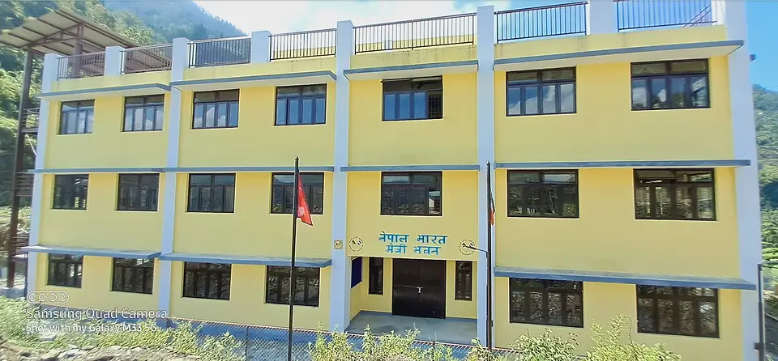

Hello!
I'm Ajay Kumar
"I build websites that are more than just code—they tell a story. Inspired by innovation, I turn ideas into interactive experiences. Every design is fast, responsive, and user-friendly. I create digital spaces that leave a lasting impact."
Skills
C++
Skilled in writing clean and efficient code using object-oriented programming. Experience with STL, problem-solving, and building fast, reliable applications.
Python
Skilled in writing clear and efficient code for data processing, automation, and app development. Experience with NumPy, Pandas, and Flask.
Frontend Developer
Skilled in building responsive and user-friendly websites using HTML, CSS, and JavaScript. Experience with React and cross-browser compatibility.
Education
